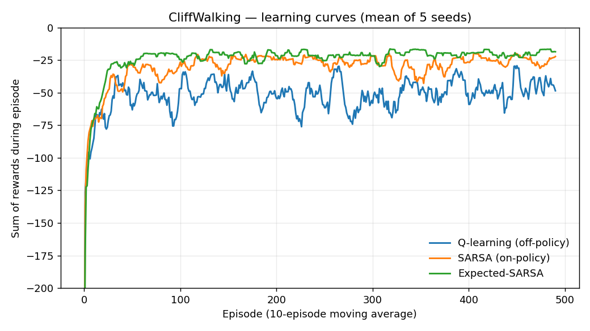
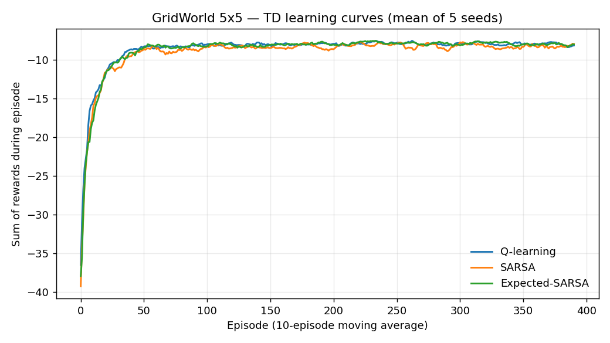
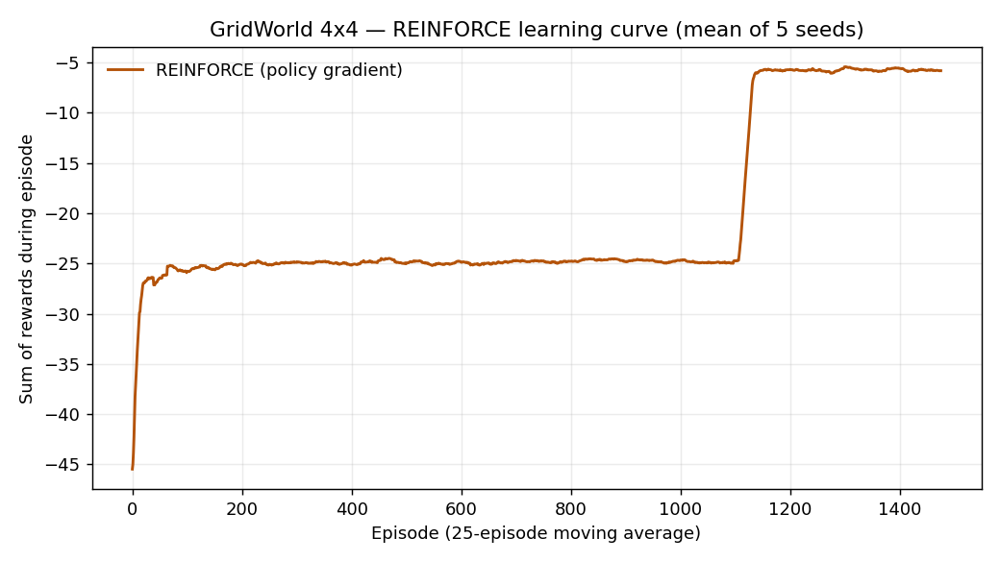

From-Scratch Build · Reinforcement Learning
One harness, many algorithms. The classic reinforcement-learning control methods — Q-learning, SARSA, Expected-SARSA, REINFORCE — each implemented from scratch in numpy and pitted against the same hand-built environments, so the trade-offs textbooks describe in prose become curves you can actually read.
What it is
Reinforcement learning has a sprawling family of algorithms, and they truly click only when you run two side by side on the same problem and watch one learn a bolder path, another a safer one. This lab is exactly that: a shared interface where each method plugs into the same environments and reports the same metrics.
The environments are written by hand — no gym, no gymnasium — so the whole loop, from env.step() to the policy update, is visible and tested. Holding the environment fixed and swapping only the algorithm is what makes the comparison honest.
The stack
Each is implemented from first principles, not imported from a library. s,a,r,s' is a transition; α the step size, γ the discount.
Deterministic grid, −1 per step. Walls and edges block movement; the optimal policy is the shortest path.
4×12 grid. The cliff costs −100 and resets you to the start. The task that separates on-policy from off-policy.
A column-dependent upward wind drifts the agent every move — a discretised disturbance-rejection task.
Results · real runs
The headline result, averaged over 5 seeds. Q-learning learns the optimal risky path hugging the cliff edge; SARSA learns a safer, longer path one row back, because its on-policy backups account for the exploratory steps that occasionally fall off.
| Algorithm | Greedy return | Path | Gap to cliff |
|---|---|---|---|
| Q-learning (off-policy) | −13.00 | 13 steps | 1 row |
| Expected-SARSA | −15.00 | 15 steps | 2 rows |
| SARSA (on-policy) | −17.00 | 17 steps | 2 rows |

Results · real runs
On the simpler grid the three TD methods all find the optimal path. REINFORCE, the only policy-based method here, optimises its softmax policy directly with no value table and reaches the optimal path on the 4×4 variant.
| Algorithm | Greedy return |
|---|---|
| Q-learning | −7.00 |
| SARSA | −7.00 |
| Expected-SARSA | −7.00 |
| REINFORCE | −5.00 |


Run it
Pure numpy + matplotlib. The figures and tables above are regenerated by train.py; the suite below checks both environment dynamics and learning behaviour.
pip install -r requirements.txt
python -m pytest -q # 15 passed
python train.py # regenerate figures/ and the tablesReflection